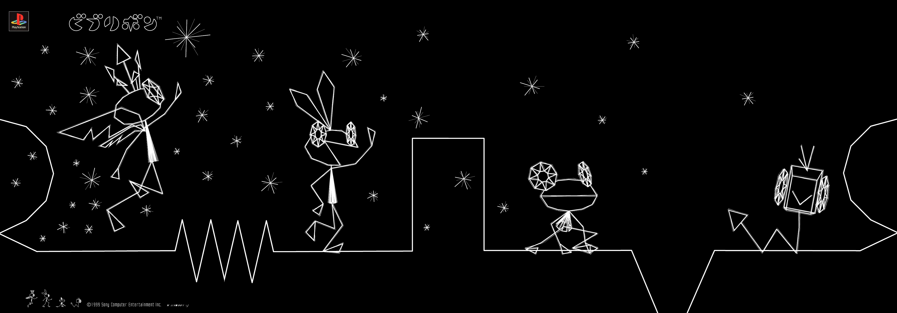

Welcomeようこそ

Vib-Ribbon is a rhythm game released by Sony for the original PlayStation, built by the Tokyo studio NanaOn-Sha. If you have heard of their earlier work, PaRappa the Rapper, you already know part of the story: the same designer, Masaya Matsuura, is the mind behind both projects, and the two games share a willingness to strip music-based play down to something unusually playful.ビブリボンは、東京のスタジオ七音社（NanaOn-Sha）が開発し、ソニーが初代PlayStation向けに発売したリズムゲームです。同社の前作『パラッパラッパー』をご存じなら、話の半分はもう知っていることになります。どちらも松浦雅也氏がデザインしたもので、音楽を使った遊びを、驚くほど遊び心のあるかたちまで削ぎ落とすという姿勢を共有しています。
What sets Vib-Ribbon apart is how little it puts on the screen. The entire visual language is a single white line, scribbled with obstacles, traced from left to right while a small rabbit named Vibri hops along it. There is no scenery, no HUD, and almost no color. The challenge lives entirely in the rhythm and the shapes.ビブリボンが特別なのは、画面に映すものの少なさです。その視覚言語は、障害物が書き込まれた一本の白い線だけで、左から右へと引かれていく線の上を、ビブリという小さなウサギが跳ねていきます。背景も、HUDも、色もほとんどありません。難しさはすべて、リズムと図形の中にあります。
The project did not begin as a retail game at all. It started life as a pitch for a Mercedes-Benz A-Class commercial in the late 1990s. When that partnership fell through, NanaOn-Sha kept building. By the time the game reached Japanese shelves on December 9, 1999, it had grown into something no ad could contain.このプロジェクトは、もともと市販ゲームとして始まったものではありません。1990年代後半、メルセデス・ベンツAクラスのCM企画として生まれました。その提携が流れた後も、七音社は開発を続けました。1999年12月9日に日本で発売される頃には、CMには収まりきらないものへと育っていたのです。
Europe received its own release on September 1, 2000, but players in North America had to wait. The PlayStation-era version never shipped on disc in the US; it was not until Sony quietly put the game on PSN in October 2014 that the region finally got an official copy.ヨーロッパでは2000年9月1日に独自のリリースがありましたが、北米のプレイヤーは待たされることになりました。PlayStation時代のバージョンは米国ではディスクとして発売されず、2014年10月にソニーがひっそりとPSNで配信を始めて、ようやく正式な形で手に入るようになりました。